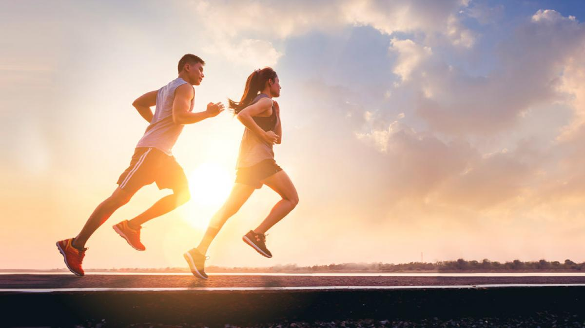
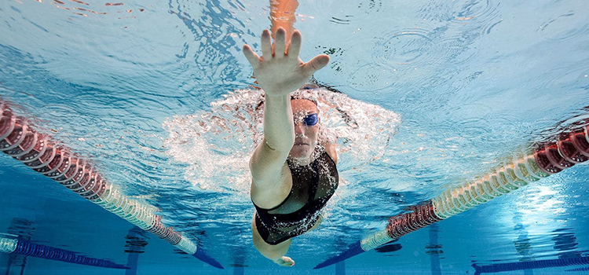

informacion
El deporte es un camino para drenar y canalizar las pulsiones competitivas del ser humano, de manera más constructiva y positiva que los enfrentamientos o las guerras. En muchas ocasiones logra formar y fortalecer vínculos entre los deportistas, en lugar de enemistades irreconciliables
El deporte es una actividad, normalmente de carácter competitivo, que puede mejorar la condición física de quien lo practica, que además tiene propiedades que lo diferencian del juego.
CORRER
Correr al aire libre se asocia a mayores beneficios psicológicos: está relacionado con mayores sentimientos de revitalización y participación positiva, reduce la tensión o el estrés. La exposición al sol y el aumento de los niveles de vitamina D es otro argumento a favor de correr al aire libre..
NADAR
En la piscina tenemos un entorno más estable. No nos afectan las corrientes, las olas, las mareas, el viento… Así que los ritmos, los tiempos, las técnicas de nado son siempre comparables, de una sesión a otra. Esto es muy positivo si queremos comparar y ver cómo estamos progresando.
SALUD
El ejercicio regular ayuda a prevenir los graves problemas de salud que se asocian con el sobrepeso u obesidad. ¿Por qué es tan importante el ejercicio físico? Aporta muchos beneficios. Verás: Quema calorías en vez de almacenarlas como grasa en el cuerpo. Ayuda a mantener un peso saludable y reduce el riesgo.
ALIMENTACION
Una alimentación deportiva como base, debe ser variada, completa y sana. Se utilizarán alimentos integrales y si es posible, orgánicos. Patatas, verduras, lácteos, carne, pescado, fruta fresca, etc. Además, se harán preferiblemente 5 ingestas al día respetando horarios en lo posible.
TIEMPO
Por extensión, en el deporte, un tiempo es cada una de las partes en que se dividen los partidos de algunos deportes. Por ejemplo; en el fútbol existen dos tiempos de 45 minutos.